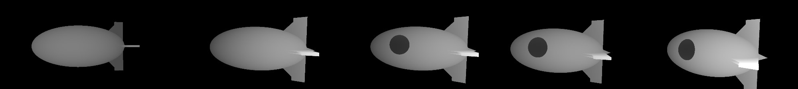
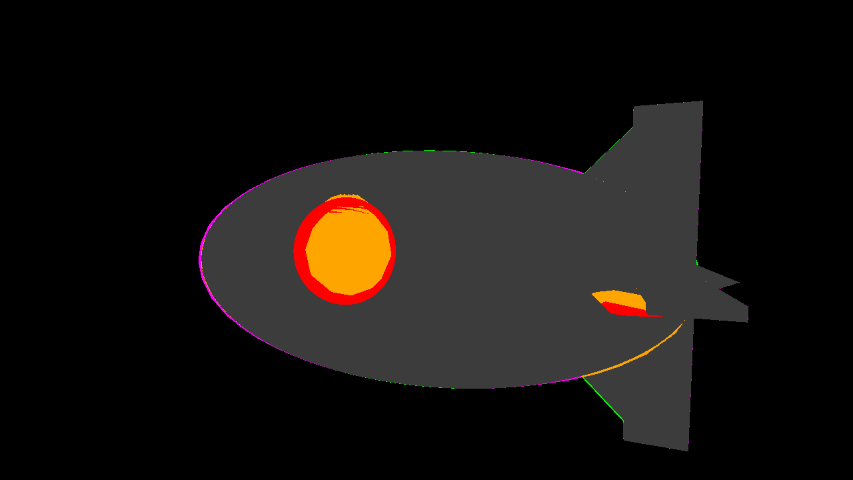
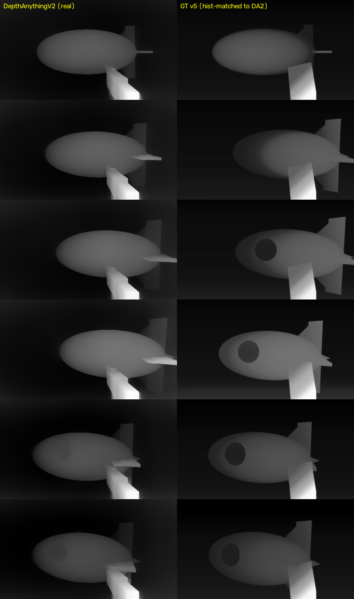
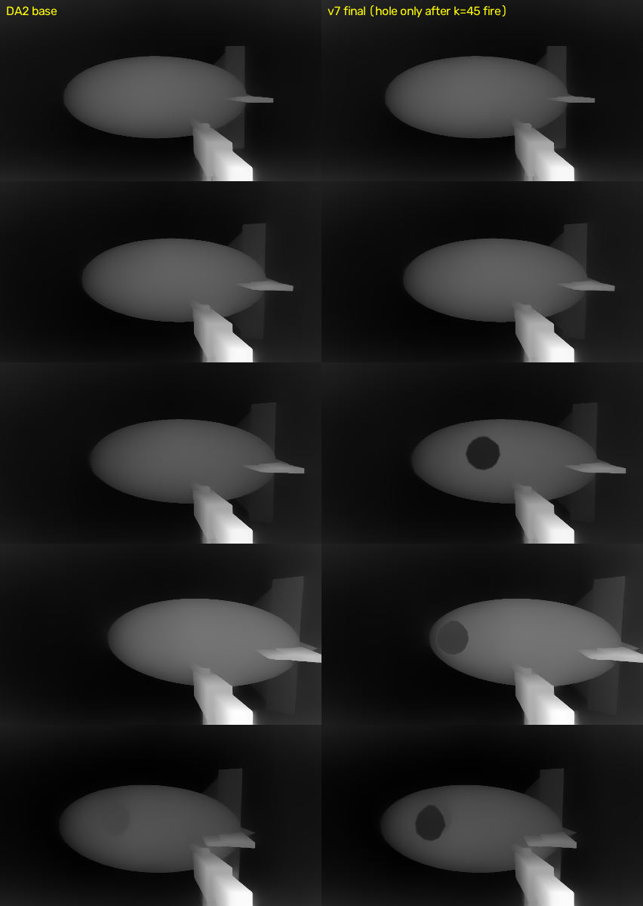
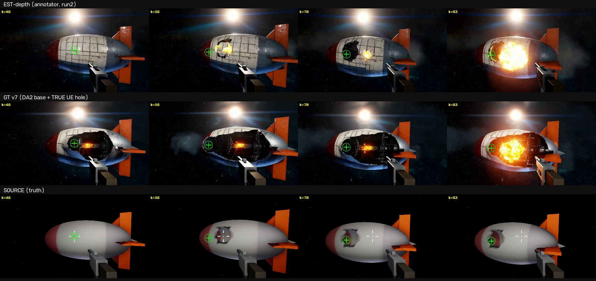
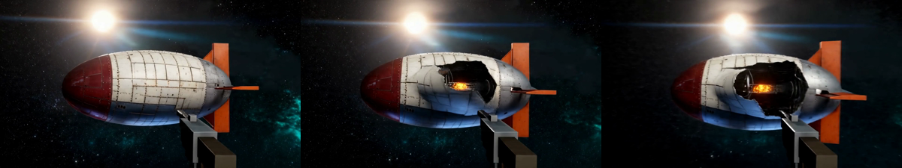

运行时改造的 UE6 游戏 × 生成式视频 · 实验记录
起因(用户观察):枪击版 VACE 成片里,起火点和真实弹孔对不上。
诊断:那一发用 preprocess=true——VACE 只对服务端单目估计的深度做条件,
而估计器把船壳上 50-90px 的暗色弹孔读成了涂装,深度图里根本没有洞。结构通道缺失,模型只能按先验自选起火点。
验证方法:自制真值深度控制视频,preprocess=false 直喂,同 seed=42 对照。
① SceneDepth 的厘米值被 ExportRenderTarget 按 [0,1] 假设量化——全白,而且文件魔数暴露 .exr 文件名下写的其实是 PNG;
② 换 DeviceDepth 时改的参数只写在"首次创建"分支里,复用的旧 rig 根本没生效(改配置要改活对象,不只是构造代码);
③ stop-motion 下 CaptureScene→Export 有时序竞态,帧里叠着上一姿态的重影椭圆。
索性绕开渲染器:几何(椭球+四鳍+尾锥+弹孔胶囊)与逐帧位姿全在侧车 v7_shot_clip.json 里, 直接 numpy 解析光线投射渲染深度——椭球二次求交、鳍薄板三角求交、尾锥圆锥求交、 弹孔按雕刻胶囊做穿透(近壳镂空 → 映出远壳)。渲染器完全不在环里,深度纯粹从参数导出。 洞在 t=1.8(第46帧)准时出现、极性正确、随相机有正确视差、零重影。

手搓归一化的解析深度直喂 VACE,输出船体变深蓝、鼻尖凭空喷焰——我最初归因为"深度带不动外观",用户指出真正问题:UE 出的深度和 VACE 期望的深度分布根本不一样。由此展开一场三天里最深的联合 debug。
审计发现"UE 真值"PNG 全图只有 5-8 个唯一值(50-100cm 一个台阶)——此前被误诊为"stop-motion 重影"的双椭圆,实为量化梯田。
根因:CreateRenderTarget2D 的 format=4 在 UE 枚举里是 R16f 而非 RGBA16f,EXR 浮点导出路径从未触发。
修复组合:RGBA16f(6) + SceneDepth(4) → 真 EXR,厘米级浮点(pip OpenEXR 读取)。

本地跑通 DA2 真身后发现:同一帧船体带 MiDaS ~169 vs DA2 ~95,近 2 倍——第一版分位数校准锚错了参照系。VACE 源码里 V2 标注器就是 DepthAnything。

响应曲线实测非单调:船体侧缘(z≈520cm)被打到接近背景(灰度 9-17),而更远的洞远壁(z=705cm)反而 83;弹孔的 300cm 真实断崖在 DA2 里只剩 15 灰度的凹陷——这就是估计深度版起火点游走的信号学根源。
DA2 全场当基底(主体/枪/背景 100% 原生分布,枪由 DA2 自己提供,无需任何合成件); 真·UE 浮点深度只注入弹孔区域(判定:实测深度比理想椭球前表面深 80cm+),秩匹配进当帧 DA2 值域,σ3 羽化,并按开火帧 k=45 时序门控。



1. 空间事件锚定:成立。分布原生 + 事件真值的控制信号让损伤四帧全部钉在真实弹孔上(估计深度版 1/4 碰巧)。
2. 时序锚定:软性。洞在控制信号里 k=45 突现,模型让它从 ~k25 渐入——时间维度上视频先验强于逐帧控制。
3. 尺寸被外观层放大。prompt 的"torn opening / interior"戏剧化语言把 130px 的洞演成半船撕裂;训练数据版应写克制 prompt。
4. 方法论:分布要原生,事件要真值,缺一不可——③号失败(纯真值、分布外)与①②号失败(纯原生、无事件信号)从两侧证明了这一点。这个配方由用户的三次纠偏逼出:"别拼接,查源码"、"锚错参照系了"、"UE 深度本身有问题"。
5. 基建缺口:UE6 桥没有 G-buffer 导出;UE5.7 CitySample 的 AWStreamBridge(PrePostProcessPass 视图扩展 → R32F 深度 zlib 流,带逐帧时间戳)是移植蓝本,立项后可淘汰 stop-motion。